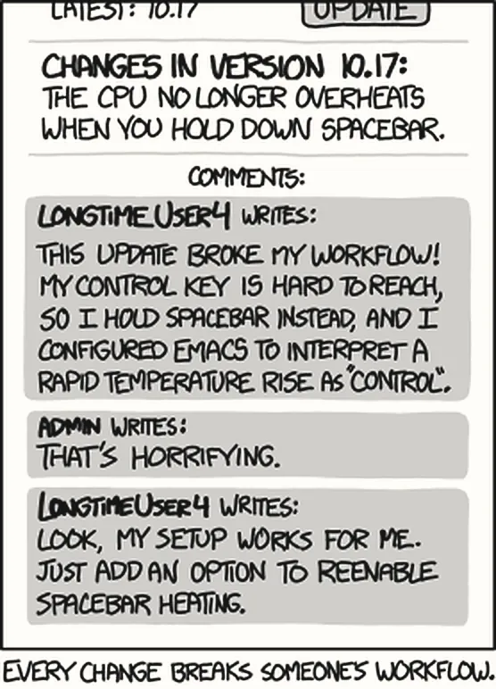
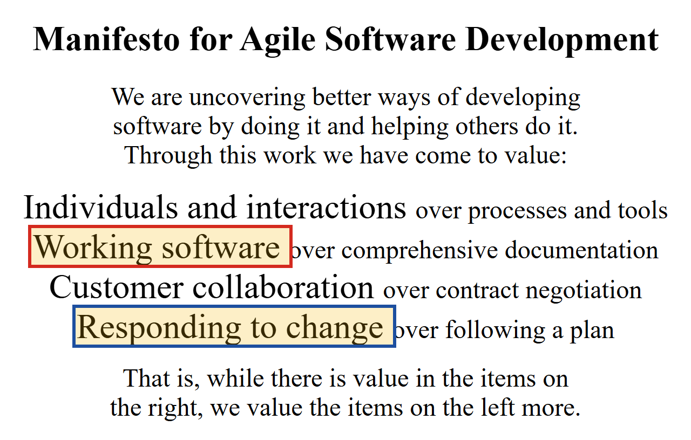
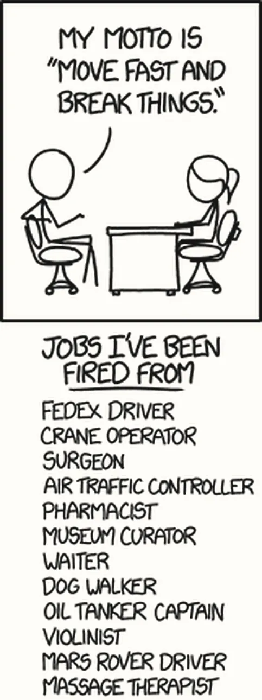
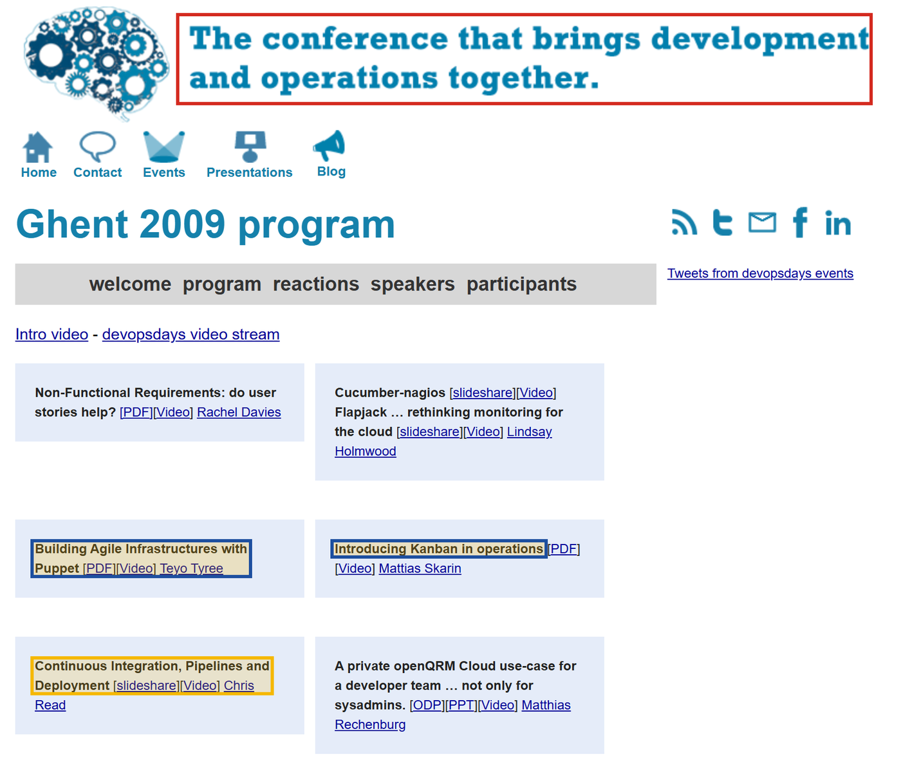

Cuối tab Phía server của Bài 00 còn một câu mình chưa kể hết: tám chặng không phải code của bạn thì ai lo? Trong phần lớn lịch sử ngành phần mềm, câu trả lời là một đội khác. Muốn hiểu vì sao phải nghĩ ra DevOps thì bắt đầu từ cách chia việc đó.
Phát triển và vận hành: hai đội, hai thước đo
Một công ty phần mềm chia việc thế nào? Ở rất nhiều công ty trước năm 2010, và ở không ít công ty hôm nay, công việc được chia cho hai bộ phận. Bộ phận phát triển (development, gọi tắt là dev) viết tính năng mới. Bộ phận vận hành (operations, gọi tắt là ops) giữ cho hệ thống chạy, tức là lắp và cấu hình server, giữ mạng và firewall, sao lưu dữ liệu, và trực khi có sự cố lúc nửa đêm. Theo bản đồ chín chặng thì dev lo ứng dụng, còn ops lo gần như mọi thứ quanh nó.
Chia việc như vậy có gì sai? Tự nó thì hợp lý, vì mỗi bên cần kỹ năng khác nhau. Chỗ rắc rối là hai bên bị đánh giá bằng hai thước đo kéo ngược nhau.
Dev được đánh giá bằng lượng tính năng mới đưa ra. Mà tính năng mới nào cũng là một thay đổi, nên dev được đánh giá bằng số thay đổi. Ops thì được đánh giá bằng việc hệ thống không sập. Mà như Bài 00 đã nói, hệ thống đang chạy tốt chỉ hỏng khi có thứ gì đó thay đổi. Vì vậy với ops, mỗi thay đổi là một rủi ro cần hạn chế, còn với dev, mỗi lần bị hạn chế là một tính năng chậm ra mắt.
Nỗi lo của ops có cơ sở, và Ảnh 2 kể nó bằng một ví dụ cố tình cường điệu.

- Deploy triển khai
- Việc đưa một phiên bản mới của ứng dụng lên server để người dùng bắt đầu dùng nó. Tiếng Việt hay nói gọn là "đưa lên" hoặc "triển khai".
- Production môi trường thật
- Những server đang phục vụ người dùng thật. Đối lập với máy dev và các server dùng để thử. Một lỗi trên production là lỗi người dùng nhìn thấy.
Hai bên dung hoà với nhau thế nào? Thường là gom thay đổi lại để số lần deploy ít đi. Nhiều tính năng được dồn vào một bản phát hành lớn, và bản đó được đưa lên production vài tháng một lần, vào một khung giờ ban đêm đã đặt lịch trước. Dev viết xong thì bàn giao một gói phần mềm kèm tài liệu hướng dẫn cài đặt, rồi ops nhận gói đó và tự cài lên server.
Năm 2006, Werner Vogels, giám đốc công nghệ của Amazon, tả lại mô hình này trong một cuộc phỏng vấn với tạp chí ACM Queue bằng câu sau:
"The traditional model is that you take your software to the wall that separates development and operations, and throw it over and then forget about it."
Dịch ra thì mô hình truyền thống là mang phần mềm tới bức tường ngăn phát triển với vận hành, ném nó qua tường, rồi quên đi. Bức tường ở đây không có thật, đó là hình ảnh Vogels dùng để nói về việc bàn giao một chiều.
Khi có sự cố: mỗi bên thấy nửa tấm bản đồ
Bức tường đó đắt nhất vào lúc nào? Lúc có sự cố. Quay lại tình huống mở đầu Bài 00, khi web không vào được. Dev chỉ thấy code của mình, nên họ đọc lại, thấy không đổi gì, và kết luận "lỗi ở server". Ops thì thấy server vẫn chạy, firewall đúng luật, và kết luận "lỗi ở code". Bên nào cũng đúng với nửa bản đồ mình nhìn thấy, mà không bên nào nhìn được cả chín chặng. Thời gian trôi mất trong lúc hai bên chứng minh lỗi không phải của mình.
Trước khi có ai nói tới DevOps, giới lập trình đã tự cải cách cách làm của mình. Cuộc cải cách đó giải được một nửa bài toán, và nửa còn lại là chỗ DevOps ra đời.
2001: Tuyên ngôn Agile
Cuối thập niên 1990 người ta làm phần mềm ra sao? Nhiều dự án vẫn làm theo lối lập kế hoạch kỹ từ đầu, tức viết đặc tả trước, rồi thiết kế, rồi mới viết code, rồi mới kiểm thử. Mỗi bước kéo dài hàng tháng, nên tới lúc phần mềm xong thì yêu cầu của khách hàng đã đổi. Vì thế năm 2001, mười bảy người làm phần mềm cùng ký một văn bản ngắn tên là Manifesto for Agile Software Development, tuyên ngôn phát triển phần mềm linh hoạt.

Tuyên ngôn đó đổi được gì? Các đội phát triển chuyển sang làm việc theo những vòng ngắn, thường vài tuần một vòng. Mỗi vòng làm xong một ít tính năng chạy được, cho khách hàng xem, rồi điều chỉnh. Nhờ vậy đội dev ra thay đổi nhanh hơn trước rất nhiều.
Giới hạn: tốc độ dừng lại ở bức tường
Dev nhanh hơn thì người dùng có nhận tính năng nhanh hơn không? Chưa chắc, vì "làm xong" ở đây là xong ở phía dev. Code sẵn sàng sau mỗi vòng hai tuần chưa có nghĩa là người dùng được dùng nó sau hai tuần. Đường từ code xong tới production vẫn đi qua bức tường cũ, gồm bàn giao, xếp lịch và cài tay.
Vì vậy ở nhiều tổ chức, dev đã chạy theo nhịp tuần trong khi production vẫn chỉ đổi theo nhịp quý. Thay đổi dồn lại phía trước bức tường, nên mỗi lần deploy thành một lần lớn, đúng loại thay đổi mà ops muốn tránh nhất.
Tám năm sau tuyên ngôn, câu hỏi vẫn còn nguyên. Phần giới thiệu của một bài nói ở hội nghị devopsdays đầu tiên năm 2009, hội nghị mà tab sau kể, mở đầu bằng đúng câu này: "Software development teams have had Agile going for some time. But how can operations derive from the same benefits?" Nghĩa là các đội phát triển có Agile từ lâu rồi, còn vận hành thì hưởng lợi từ nó bằng cách nào?
Muốn đi tiếp thì phải dỡ chính bức tường đó, và trong những năm 2006-2009, nhiều nơi bắt đầu làm việc ấy.
Không ai phát minh ra DevOps trong một ngày. Nó thành hình qua bốn mốc nối nhau, mỗi mốc giải thêm một phần vấn đề ở tab Hai đội.
2006: "You build it, you run it"
Amazon dỡ bức tường bằng cách nào? Trong cùng cuộc phỏng vấn năm 2006 với ACM Queue, ngay sau câu về bức tường, Werner Vogels kể Amazon làm khác: "Not at Amazon. You build it, you run it." Nghĩa là đội nào viết một dịch vụ thì chính đội đó vận hành nó, kể cả trực sự cố. Theo Vogels, việc này đưa lập trình viên tiếp xúc hằng ngày với hoạt động thật của phần mềm mình viết, và với khách hàng của nó. Vậy Amazon dỡ bức tường bằng cách bỏ hẳn bước bàn giao, để hai đầu của tấm bản đồ về chung một nhóm.
2008: "Agile Infrastructure"
Ở hội nghị Agile năm 2008 tại Toronto, Andrew Shafer đề xuất một buổi thảo luận về chủ đề Agile Infrastructure, tức áp tinh thần Agile vào phía hạ tầng. Có ai quan tâm không? Theo những bài kể lại lịch sử DevOps về sau, chủ đề ít người quan tâm tới mức chỉ một người tìm tới. Người đó là Patrick Debois, một chuyên gia tư vấn người Bỉ, từng phải đứng giữa đội phát triển và đội vận hành trong một dự án chuyển trung tâm dữ liệu. Hai người bắt đầu trao đổi từ đó.
2009: mười lần deploy một ngày
Tháng 6 năm 2009, ở hội nghị Velocity, hai người của trang chia sẻ ảnh Flickr trình bày bài nói 10+ Deploys per Day: Dev and Ops Cooperation at Flickr. Đó là John Allspaw, phụ trách vận hành, và Paul Hammond, phụ trách kỹ thuật phát triển. Con số trong tiêu đề gây chú ý vì nó ngược hẳn với lối "vài tháng một bản phát hành": vào một ngày bình thường, Flickr deploy lên production khoảng mười lần hoặc hơn.
Deploy nhiều như vậy thì hệ thống có kém ổn định đi không? Lập luận của Flickr là không. Một thay đổi nhỏ thì dễ kiểm tra, dễ hiểu khi nó gây lỗi, và dễ gỡ ra. Vì vậy deploy thường xuyên không làm hệ thống kém ổn định đi, nếu có đủ hai điều kiện:
- việc deploy được tự động hoá, để lần nào cũng giống lần nào;
- dev với ops dùng chung công cụ, chung số liệu, và cùng nhìn một màn hình khi có sự cố.
Vậy mâu thuẫn "dev muốn thay đổi, ops muốn ổn định" ở tab đầu hoá ra là mâu thuẫn của những thay đổi lớn. Còn đi nhanh mà thiếu hai điều kiện đó thì ra sao, Ảnh 4 cho thấy.

Tháng 10 năm 2009: devopsdays ở Ghent
Cái tên DevOps từ đâu ra? Patrick Debois không đi được tới Velocity, và xem bài nói của Flickr qua video. Được nhiều người trên mạng xã hội cổ vũ, Debois tự tổ chức một hội nghị ở Ghent, Bỉ, vào tháng 10 năm 2009. Hội nghị tên là devopsdays, ghép từ hai chữ development và operations. Chữ devops từ đó thành tên chung cho cách làm mà hội nghị bàn tới, và về sau devopsdays được tổ chức ở nhiều thành phố trên thế giới.

Hai cái tên trong Ảnh 5 cần giải thích. Puppet là một công cụ cho phép mô tả cấu hình của server trong các tệp văn bản, để máy được cấu hình đúng như mô tả mà không cần người gõ tay từng lệnh. Kanban là cách sắp việc trên một bảng chung, để cả nhóm thấy việc nào đang làm, việc nào đang chờ. Bản thân hai công cụ không quan trọng với phụ lục này. Thứ đáng chú ý là năm 2009 người vận hành đã muốn quản lý server như quản lý code, và người viết code đã muốn tự động hoá đường lên production.
Ba ý ghép thành DevOps trong khoảng 2006-2009. 1 là đội viết ra phần mềm cũng vận hành nó (Amazon). 2 là hạ tầng cũng làm theo lối Agile (Toronto 2008). 3 là thay đổi nhỏ, deploy tự động và thường xuyên thì vừa nhanh vừa ổn định (Flickr 2009). Hội nghị devopsdays ở Ghent cuối năm 2009 cho cách làm đó một cái tên.
Một cái tên thì chưa phải định nghĩa. Vậy rốt cuộc DevOps là gì, và làm sao biết một nhóm đang làm DevOps tốt hay dở?
Mười hai năm sau hội nghị devopsdays đầu tiên, DevOps có một văn bản chuẩn: IEEE 2675-2021. Năm 2022, văn bản này được chấp nhận thành chuẩn quốc tế ISO/IEC/IEEE 32675:2022. Ngoài định nghĩa trong chuẩn, nghề này còn có một bộ chỉ số để đo DevOps, được nghiên cứu nhiều năm.
Định nghĩa trong chuẩn
DevOps là tập hợp các nguyên tắc và cách làm giúp các bên liên quan giao tiếp và cộng tác tốt hơn, nhằm đặc tả, phát triển và vận hành các sản phẩm và dịch vụ phần mềm và hệ thống, đồng thời cải tiến liên tục mọi khía cạnh trong vòng đời của chúng.
Nguyên văn: "DevOps: Set of principles and practices which enable better communication and collaboration between relevant stakeholders for the purpose of specifying, developing, and operating software and systems products and services, and continuous improvements in all aspects of the life cycle."
"Các bên liên quan" trong định nghĩa là ai? Các bên liên quan (stakeholders) là những người có phần trong việc phần mềm được làm ra và chạy ra sao. Trong câu chuyện của phụ lục, đó trước hết là hai đội ở tab Hai đội.
Chuẩn có kể thuật ngữ ra đời từ đâu không? Có, ở mục 5.1, và lời kể đó khớp với tab đầu. Theo chuẩn, thuật ngữ DevOps hình thành khi có đủ hai thứ. Thứ nhất, đã có sẵn những công cụ tự động hoá hoàn toàn việc build, đóng gói và deploy ứng dụng. Thứ hai, người ta nhận ra các tổ chức công nghệ thông tin chưa sẵn sàng dùng những công cụ đó cho hiệu quả. Chuẩn viết tiếp rằng lập trình viên và người vận hành, theo truyền thống, có những góc nhìn khác nhau, có lúc mâu thuẫn nhau.
Chuẩn cũng nêu bức tranh quen thuộc, là lập trình viên muốn đi nhanh, còn đội vận hành lo giữ độ tin cậy và bảo đảm an ninh mạng. Nhưng chính chuẩn gọi bức tranh đó là một mô tả cực đoan, đơn giản hoá quá mức ("an extreme, oversimplified characterization"). Vì vậy hai thước đo ngược nhau ở tab Hai đội chỉ là một cách mô tả, để thấy vì sao hai phía kéo về hai hướng. Nó chưa phải mô tả đúng cho mọi công ty.
Để nối định nghĩa của chuẩn với các mốc ở tab trước, mình dùng một cách nói ngắn và hẹp hơn, của riêng mình. DevOps là cách tổ chức để một nhóm chịu trách nhiệm cho phần mềm, từ lúc viết tới lúc nó chạy ổn định. Cách tổ chức đó dựa trên ba trụ: chung trách nhiệm, tự động hoá những bước lặp lại giữa code và production, và đo lường.
Đây là lời của phụ lục, không trích từ chuẩn. Ba trụ đó khớp với các mốc ở tab trước:
- chung trách nhiệm là "you build it, you run it";
- tự động hoá là điều kiện để Flickr deploy mười lần một ngày;
- đo lường là cách biết có cải tiến liên tục hay không. Định nghĩa của chuẩn có nhắc tới cải tiến liên tục, và phần dưới kể tiếp chuyện đo.
Đo DevOps: năm chỉ số của DORA
DevOps hứa "vừa nhanh vừa ổn định", vậy đo hai thứ đó bằng gì? Bằng bộ chỉ số của DORA (DevOps Research and Assessment), một chương trình nghiên cứu nay do Google Cloud điều hành. Nhiều năm liền, DORA khảo sát các nhóm làm phần mềm và rút ra một bộ chỉ số đo hiệu quả giao phần mềm.
Bộ hiện hành gồm năm chỉ số, xếp thành hai nhóm như ở Bảng 1. Nhóm throughput đo tốc độ thay đổi đi tới production, còn nhóm instability đo mức thay đổi gây ra rắc rối.
| Nhóm | Chỉ số | Định nghĩa của DORA | Nghĩa |
|---|---|---|---|
| Throughput (tốc độ) | Change lead time | The amount of time it takes for a change to go from committed to version control to deployed in production. | Thời gian từ lúc một thay đổi được lưu vào kho mã tới lúc lên production. |
| Deployment frequency | The number of deployments over a given period or the time between deployments. | Số lần deploy trong một khoảng thời gian, hoặc khoảng cách giữa hai lần deploy. | |
| Failed deployment recovery time | The time it takes to recover from a deployment that fails and requires immediate intervention. | Thời gian khôi phục sau một lần deploy hỏng, phải can thiệp ngay. | |
| Instability (bất ổn) | Change fail rate | The ratio of deployments that require immediate intervention following a deployment. Likely resulting in a rollback of the changes or a “hotfix” to quickly remediate any issues. | Tỉ lệ lần deploy phải can thiệp gấp ngay sau đó, thường bằng cách gỡ thay đổi ra hoặc sửa gấp. |
| Deployment rework rate | The ratio of deployments that are unplanned but happen as a result of an incident in production. | Tỉ lệ lần deploy ngoài kế hoạch, phát sinh vì một sự cố trên production. |
Đặt năm chỉ số cạnh nhau, DORA rút ra một kết luận về quan hệ giữa hai nhóm.
DORA’s research has repeatedly demonstrated that speed and stability are not tradeoffs. In fact, we see
that the metrics are correlated for most teams. Top performers do well across all five metrics, and low
performers do poorly.
Kết luận ở Hình 1 có ý nghĩa gì với mâu thuẫn ở tab Hai đội? Nó trả lời thẳng mâu thuẫn đó. Thước đo của dev, là thay đổi nhiều và nhanh, và thước đo của ops, là ít sự cố và khôi phục nhanh, được đặt chung trong một bảng điểm. Dữ liệu của DORA cho thấy ở phần lớn các nhóm làm phần mềm, chỉ số tốc độ và chỉ số ổn định đi cùng chiều. Nhóm làm tốt thường tốt ở cả năm chỉ số, nhóm làm kém thường kém ở cả năm. Vì vậy một nhóm DevOps không chọn giữa nhanh và ổn định, mà được đo trên cả hai.
DevOps không phải là gì
Cái tên lan nhanh hơn cách hiểu, nên có ba hiểu lầm hay gặp.
Hiểu lầm thứ nhất là coi DevOps như một công cụ để mua. Docker, GitLab hay Kubernetes là những công cụ giúp làm DevOps, nhưng một công ty dùng đủ cả ba mà vẫn bàn giao qua bức tường thì vẫn là mô hình cũ.
Hiểu lầm thứ hai là nghĩ DevOps bắt lập trình viên tự làm hết việc của vận hành. Nó chỉ có nghĩa hai phía chung mục tiêu và chung trách nhiệm, còn chuyên môn sâu về mạng hay database thì vẫn cần người giỏi việc đó.
Hiểu lầm thứ ba gắn với chức danh. "DevOps engineer" ngày nay là một chức danh tuyển dụng phổ biến, và nhiều người trong nghề chỉ ra một nghịch lý: lập một "đội DevOps" riêng đứng giữa dev và ops thì dễ dựng thêm một bức tường thứ hai, đúng điều phong trào muốn tránh.
Chuẩn IEEE 2675-2021 định nghĩa DevOps là tập hợp nguyên tắc và cách làm giúp các bên liên quan cộng tác tốt hơn suốt vòng đời phần mềm. Phụ lục tóm lại thành ba trụ: chung trách nhiệm, tự động hoá và đo lường. DORA đo DevOps bằng năm chỉ số về tốc độ và độ ổn định, và thấy hai thứ đi cùng chiều chứ không đánh đổi.
Những ý tưởng của năm 2009 giờ nằm ở đâu trong công việc hằng ngày?
Mỗi vấn đề của thời hai đội để lại một lời giải, và các lời giải đó vẫn là cách người ta làm phần mềm hôm nay. Bảng dưới đặt chúng cạnh nhau.
Từ vấn đề cũ tới lời giải hôm nay
| Vấn đề cũ | Lời giải |
|---|---|
| Mỗi bên chỉ thấy nửa tấm bản đồ khi có sự cố | Người viết ứng dụng hiểu cả chín chặng và đọc được triệu chứng của từng chặng |
| Chạy được trên máy dev nhưng hỏng trên server, vì hai nơi cài đặt khác nhau | Đóng gói ứng dụng cùng mọi thứ nó cần, để nó chạy giống nhau ở mọi máy |
| Bàn giao bằng tay, deploy hiếm và lớn | Làm tay một lần cho hiểu, rồi tự động hoá đường từ code tới production để deploy nhỏ và thường xuyên |
| Không ai ngồi trước server lúc nửa đêm | Phần mềm trông coi tự dựng ứng dụng dậy. Số liệu và cảnh báo báo cho người khi cần |
Dòng đầu của Bảng 2 giải thích vì sao lộ trình mở bằng một tấm bản đồ và cách đọc lỗi, chứ không mở bằng một công cụ. Lý do là mọi lời giải ở các dòng sau đều giả định người làm đã nhìn được cả chín chặng. Bạn không tự động hoá được việc deploy lên một server mình không hiểu, và cũng không chịu trách nhiệm được cho một chặng mà mình không biết nó hỏng thì trông ra sao.
Nối về Bài 00
Câu "trong cả đường đi, chỉ ứng dụng là code bạn viết" của Bài 00 từng là ranh giới giữa hai đội: bên này tường là dev, bên kia là ops.
DevOps không xoá ranh giới đó khỏi bản đồ. Ứng dụng vẫn là code của bạn. Cái đổi là cách chịu trách nhiệm: cả chín chặng giờ là việc chung của những người cùng làm ra và vận hành phần mềm.
Quay lại bài giảng Bài 00.
Nguồn đọc thêm
- Manifesto for Agile Software Development, 2001. agilemanifesto.org
- Jim Gray, A Conversation with Werner Vogels, ACM Queue, tập 4 số 4, 2006. Nguồn của hai câu về bức tường và "you build it, you run it". queue.acm.org/detail.cfm?id=1142065
- John Allspaw, Paul Hammond, 10+ Deploys per Day: Dev and Ops Cooperation at Flickr, Velocity 2009. Trang bài viết của Allspaw kèm slide. kitchensoap.com/2009/06/23/slides-for-velocity-talk-2009
- Steve Mezak, The Origins of DevOps: What's in a Name?, DevOps.com, 2018. Bài kể lại buổi thảo luận ở Toronto năm 2008 và việc Debois xem bài nói của Flickr qua video. devops.com/the-origins-of-devops-whats-in-a-name
- devopsdays, trang giới thiệu và lịch sử hội nghị. devopsdays.org/about
- devopsdays Ghent 2009, chương trình, trang lưu trữ. legacy.devopsdays.org/events/2009-ghent/program
- DORA, DORA's software delivery performance metrics. dora.dev/guides/dora-metrics
- IEEE 2675-2021, IEEE Standard for DevOps: Building Reliable and Secure Systems Including Application Build, Package, and Deployment. Nguồn của định nghĩa ở tab Định nghĩa; trang giới thiệu chính thức, toàn văn phải trả phí. standards.ieee.org/ieee/2675/6830
- ISO/IEC/IEEE 32675:2022, bản chuẩn quốc tế được chấp nhận từ IEEE 2675-2021; trang giới thiệu chính thức, toàn văn phải trả phí. iso.org/standard/83670.html
Nguồn ảnh
Ảnh chụp lấy từ Wikimedia Commons, dùng theo giấy phép ghi ở dòng của nó. Ảnh đã được chuyển sang đen trắng và cắt khung cho hợp bố cục trang. Ảnh chụp màn hình do mình tự chụp, các khung màu là phần đánh dấu thêm vào. Truyện tranh của xkcd dùng theo giấy phép phi thương mại ghi ở từng dòng, đã phóng to và chuyển sang đen trắng.
- Ảnh 1Trung tâm vận hành mạng của Đại học Indiana, Alan Levine, Wikimedia Commons, CC BY 2.0.
- Ảnh 2Workflow, Randall Munroe, xkcd.com, CC BY-NC 2.5.
- Ảnh 3Bốn giá trị của Tuyên ngôn Agile, chụp màn hình agilemanifesto.org, 03/10/2026; đã bỏ ảnh nền phía sau chữ và cắt bớt khoảng trống dưới tiêu đề.
- Ảnh 4Move Fast and Break Things, Randall Munroe, xkcd.com, CC BY-NC 2.5.
- Ảnh 5Chương trình devopsdays Ghent 2009, chụp màn hình legacy.devopsdays.org, 03/10/2026.